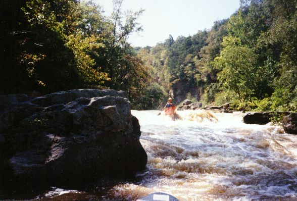
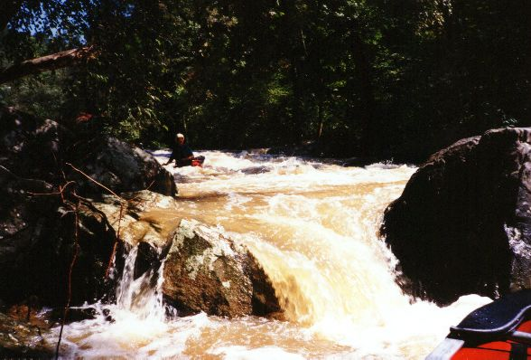

Town Creek
Will Reeves
running the Blockage
(aka Sleeping Giant Falls)

Gary Holder on some random drop on Town Creek in 1994. September 1994. It was a very good year.

Gary emerges from the shadowy depths...
Another rapid with no name